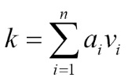
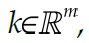
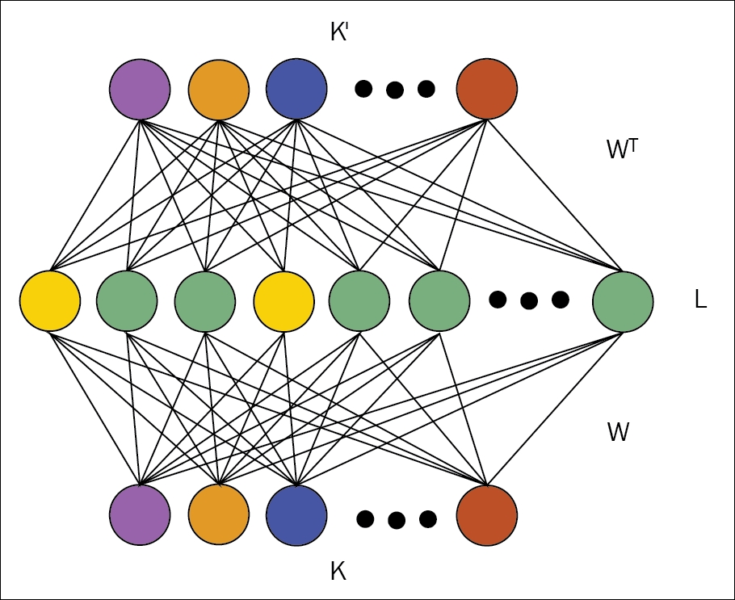
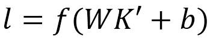
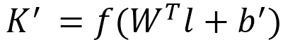
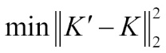

Distributed sparse representation is one of the primary keys to learn useful features in deep learning algorithms. Not only is it a coherent mode of data representation, but it also helps to capture the generation process of most of the real world dataset. In this section, we will explain how autoencoders encourage sparsity of data. We will start with introducing sparse coding. A code is termed as sparse when an input provokes the activation of a relatively small number of nodes of a neural network, which combine to represent it in a sparse way. In deep learning technology, a similar constraint is used to generate the sparse code models to implement regular autoencoders, which are trained with sparsity constants called sparse autoencoders.
Sparse coding is a type of unsupervised method to learn sets of overcomplete bases in order to represent the data in a coherent and efficient way. The primary goal of sparse coding is to determine a set of vectors (n) vi such that the input vector k can be represented as a linear combination of these vectors.
Mathematically, this can be represented as follows:

Here ai is the coefficient associated with each vector vi .
With the help of PCA, we can learn a complete set of basis vectors in a coherent way; however, we want to learn an overcomplete set of basis vectors to represent the input vector k

In a simple way, sparsity can be defined as having few non-zero components or having few components that are not close to zero. The set of coefficients ai is termed as sparse if, for a given input vector, the number of non-zero coefficients, or the number of coefficients that are way far from zero, should be a few.
With this basic understanding of sparse coding, we can now move to the next part to discover how the sparse coding concept is used for autoencoders to generate sparse autoencoders.
When the input dataset maintains some structure, and if the input features are correlated, then even a simple autoencoder algorithm can discover those correlations. Moreover, in such cases, a simple autoencoder will end up learning a low-dimensional representation, which is similar to PCA.
This perception is based on the fact that the number of hidden layers is relatively small. However, by imposing other constraints on the network, even with a large number of hidden layers, the network can still discover desired features from the input vectors.
Sparse autoencoders are generally used to learn features to perform other tasks such as classification. Autoencoders for which the sparsity constraints have been added must respond to the unique statistical features of the input dataset with which it is training on, rather than simply acting as an identity function.

Figure 6.3: Figure shows a typical example of a sparse autoencoder
Sparse autoencoders are a type of autoencoder with a sparsity enforcer, which helps to direct a single layer network to learn the hidden layer code. This approach minimizes the reconstruction errors along with restricting the number of code words needed to restructure the output. This kind of sparsifying algorithm can be considered as a classification problem that restricts the input to a single class value, which helps to reduce the prediction errors.
In this part, we will explain sparse autoencoder with a simple architecture. Figure 6.3 shows the simplest form of a sparse autoencoder, consisting of a single hidden layer h. The hidden layer h, is connected to the input vector K by a weight matrix, W, which forms the encoding step. In the decoder step, the hidden layer h outputs to a reconstruction vector K` with the help of the tied weight matrix WT. In the network, the activation function is denoted as f and the bias term as b. The activation function could be anything: linear, sigmoidal, or ReLU.
The equation to compute the sparse representation of the hidden code l is written as follows:

The reconstructed output is the hidden representation, mapped linearly to the output using this:

Learning occurs via backpropagation on the reconstruction error. All the parameters are optimized to minimize the mean square error, given as follows:

As we have the network setup now, we can add the sparsifying component, which drives the vector L towards a sparse representation. Here, we will use k-Sparse autoencoders to implement the sparse representation of the layer. (Don't get confused between the k of k-Sparse representation and K input vector. To distinguish between both of them, we have denoted these two with a small k and capital K respectively.)
The k-Sparse autoencoder [132] is based on an autoencoder with tied weights and linear activation functions. The basic idea of a k-Sparse autoencoder is very simple. In the feed-forward phase of the autoencoder, once we compute the hidden code l = WK + b, rather than reconstructing the input from all the hidden units, the method searches for the k largest hidden units and sets the remaining hidden units' values as zero.
There are alternative methods to determine the k largest hidden units. By sorting the activities of the hidden units or using ReLU, hidden units with thresholds are adjusted until we determine the k largest activities. This selection step to find the k largest activities is non-linear. The selection step behaves like a regularizer, which helps to prevent the use of large numbers of hidden units while building the output by reconstructing the input.
An issue might arise during the training of a k-Sparse autoencoder if we enforce a low sparsity level, say k=10. One common problem is that in the first few epochs, the algorithm will aggressively start assigning the individual hidden units to groups of training cases. The phenomena can be compared with the k-means clustering approach. In the successive epochs, these hidden units will be selected and re-enforced, but the other hidden units would not be adjusted.
This issue can be addressed by scheduling the sparsity level in a proper way. Let us assume we are aiming for a sparsity level of 10. In such cases, we can start with a large sparsity level of say k=100 or k=200. Hence, the k-Sparse autoencoder can train all the hidden units present. Gradually, over half of the epoch, we can linearly decrease the sparsity level of k=100 to k=10. This greatly increases the chances of all the hidden units being picked. Then, we will keep k=10 for the next half of the epoch. In this way, this kind of scheduling will guarantee that even with a low sparsity level, all of the filters will be trained.
The choice of value of k is very much crucial while designing or implementing a k-Sparse autoencoder. The value of k determines the desirable sparsity level, which helps to make the algorithm ideal for a wide variety of datasets. For example, one application could be used to pre-train a deep discriminative neural network or a shallow network.
If we take a large value for k (say k=200 on an MNIST dataset), the algorithm will tend to identify and learn very local features of the dataset. These features sometimes behave too prematurely to be used for the classification of a shallow architecture. A shallow architecture generally has a naive linear classifier, which does not really have enough architectural strength to merge all of these features and achieve a substantial classification rate. However, similar local features are very much desirable to pre-train a deep neural network.
For a smaller value of the sparsity level (say k=10 on an MNIST dataset), the output is reconstructed from the input using a smaller set of hidden units. This eventually results in detecting of global features from the datasets, instead of local features as in the earlier case. These less local features are suitable for shallow architecture for the classification tasks. On the contrary, these types of situations are not ideal for deep neural networks.